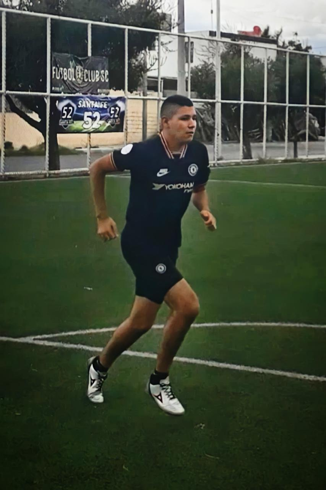
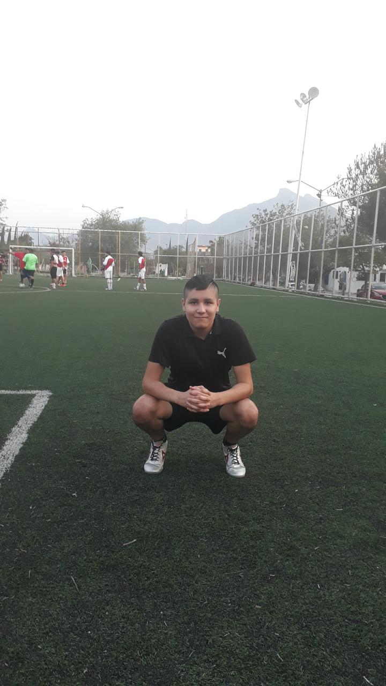

Hacer deporte es un pasatiempo maravilloso que me brinda diversión y entretenimiento, también tiene numerosos beneficios para la salud física y mental. Cuando practico deporte, estoy comprometido en actividades físicas que permiten mover el cuerpo, fortalecer los músculos y mejorar la resistencia cardiovascular. Ya sea que prefiera correr, nadar, jugar fútbol o cualquier otra actividad deportiva, estoy desafiando mis límites y mejorando mi condición física.
Además de los beneficios físicos, hacer deporte también tiene un impacto positivo en la salud mental. El deporte también puede mejorar mi autoestima y confianza en mi mismo, ya que enfrento desafíos y logros metas personales. Hacer deporte también brinda la oportunidad de socializar y conectar con otras personas que comparten mis intereses, puedo unirme a equipos deportivos, participar en clases grupales o simplemente disfrutar de actividades al aire libre con amigos y familiares. La interacción social que se produce al hacer deporte puede ser enriquecedora y permite establecer relaciones significativas.
Además, el deporte enseña importantes valores como la disciplina, la perseverancia, el trabajo en equipo y la superación personal, estos valores se pueden aplicar en otros aspectos de la vida, como el trabajo, los estudios o las relaciones personales, y ayudan a crecer y desarrollarte como persona.
El deporte es un pasatiempo increíble que me brinda diversión, beneficios físicos y mentales, oportunidades de socialización y la oportunidad de desarrollar importantes valores, y es una forma saludable y enriquecedora de ocupar el tiempo libre y mejorar la calidad de vida en general.
|  |  |